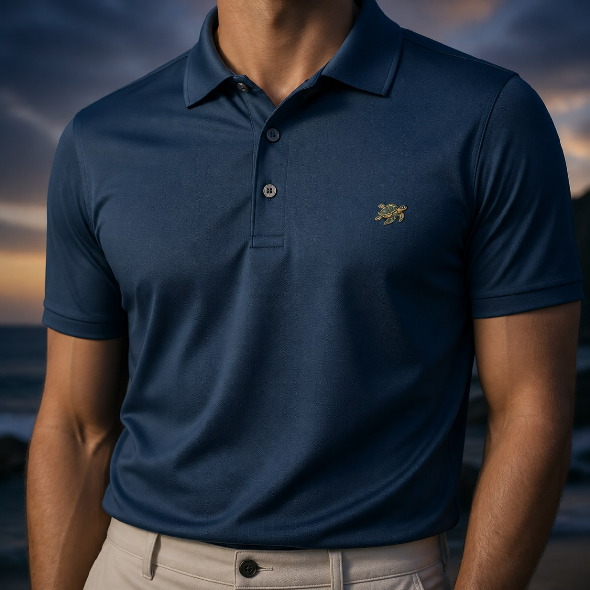
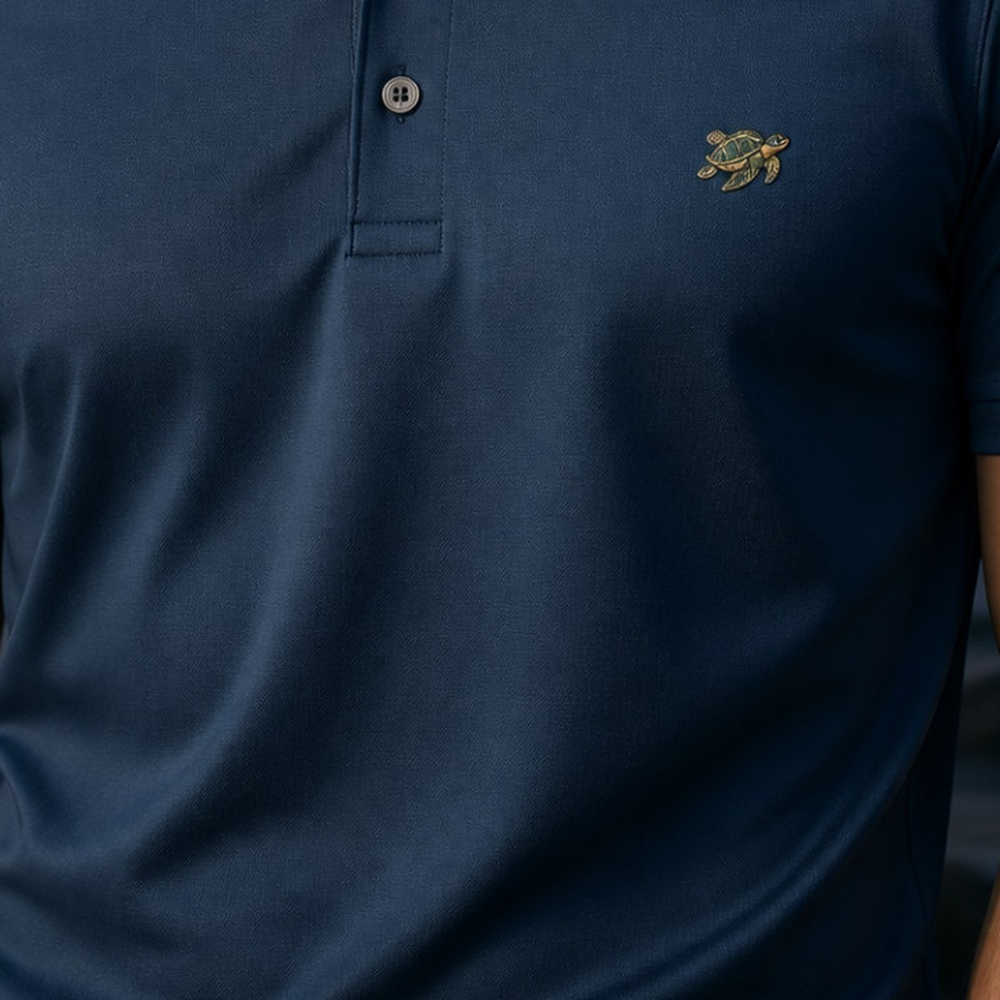

01
The Collar
Structured to hold its shape from first wear to last call.
Warm and sun-bleached — the colour of a Friday that runs into Monday.
Complimentary shipping · Thirty-day returns
Enquire with client servicesDouble-knit piqué — 88% polyester, 12% elastane. Moisture-wicking with four-way stretch, so it breathes on the water and keeps its shape through the season.
Classic tailored fit. Easy through the chest, clean through the waist. Sizes S–XL. Between sizes, take the larger.
Three-button placket with mother-of-pearl buttons, structured ribbed collar and cuffs, side vents, and the turtle embroidered at the left chest.
A new turtle each year, individually numbered to two hundred. Created for that moment in time and never repeated — while signature colors endure, with new shades introduced along the way.
Machine wash cold with like colours. Hang to dry. No ironing required.
Complimentary shipping worldwide. Thirty days to return anything unworn, with the edition tag attached.

Water to clubhouse to dinner
Four decisions you feel before you notice them.
Structured to hold its shape from first wear to last call.
Soft to the hand, cool in the sun, with enough weight to fall properly.
Embroidered with restraint. A mark, not a billboard.

Tailored through the body, easy through the shoulders. Nothing to think about.
Measurements are taken with the garment laid flat, then doubled.
Take your usual polo size. Between two sizes, take the larger.
Cut easy through the chest and shoulders, with a clean line through the waist. True to size for most builds, and forgiving on a long afternoon.
| Size | Chest | Length | Sleeve |
|---|---|---|---|
| S | 40 | 27.5 | 8.25 |
| M | 42 | 28.5 | 8.5 |
| L | 44 | 29.5 | 8.75 |
| XL | 46 | 30.5 | 9 |
Approximate, and may vary slightly between runs. Compare the chest measurement to a polo you already wear well.
Occasional notes on new editions, places worth visiting and life along the coast.
Thank you — you’re on the list.
Coastal classics inspired by family, the sea, and the places worth returning to.